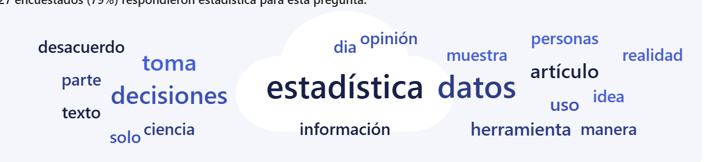
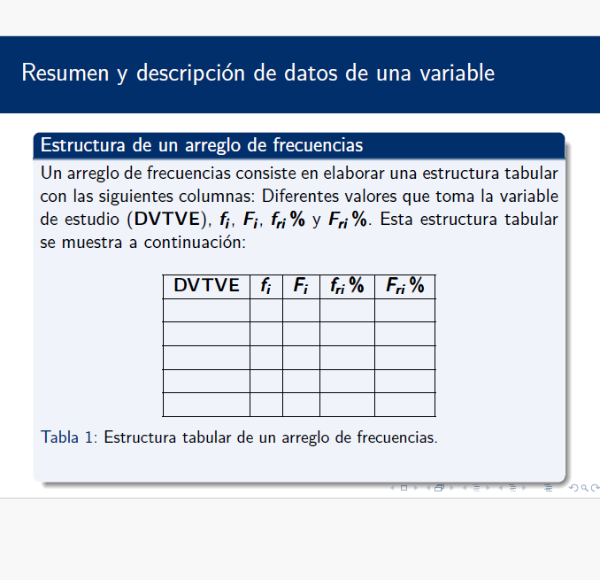

El Reto: Radiografía Digital UTB
Objetivo: Analizar la correlación entre uso de redes y hábitos de estudio.
Escanea y vota. Tu dato es la materia prima de nuestra clase hoy.
Del Caos al Orden
Caos (Nube de palabras / Apps)

Estructura (Tabla de frecuencias vacía)

¿Es este desorden información? ¿Cómo transformamos el 'ruido' en una decisión?
Notación Estadística
- fi: frecuencia absoluta.
- Fi: Frecuencia absoluta acumulada.
- fri: frecuencia relativa.
- Fri: Frecuencia relativa acumulada.
Cálculo de frecuencia relativa
fri = fi/n
Donde n es el tamaño total de la muestra.
¿Qué historia cuenta tu gráfico?
- Gráfico de Barras: Ideal para comparar magnitudes entre categorías.
- Gráfico Circular: Útil para mostrar proporciones del total.
¿Cuál elegirías si quisieras mostrar qué red es la más usada por el 70% del salón?
¡Reto: Desafío de Datos en Vivo!
- Descarga el set de datos en [Enlace a Teams].
- Construye la Tabla de Frecuencias y Gráficos correspondientes.
- Redacta 2 conclusiones clave (Insight estadístico).
- Sube tu archivo a Teams.
Premio: Puntos de participación para los 5 más rápidos y precisos.
Pensamiento Crítico
Más allá del gráfico
- Si nuestra muestra fuera solo este salón de clases, ¿podemos generalizar los resultados a toda la Universidad Tecnológica de Bolívar (UTB)? ¿Por qué?
- ¿Qué sesgos analíticos o de recolección podrían existir en nuestros datos actuales?